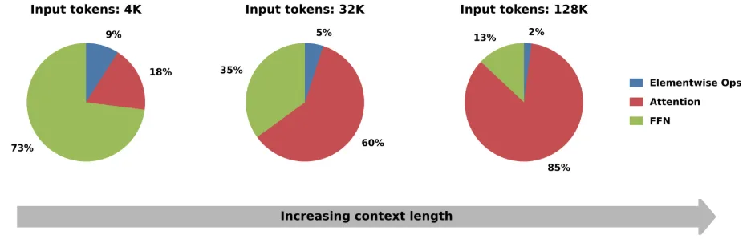
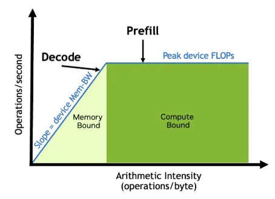
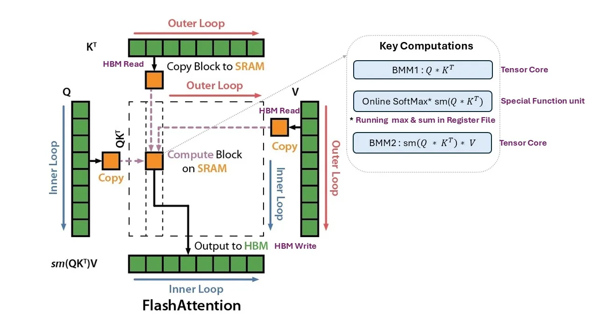
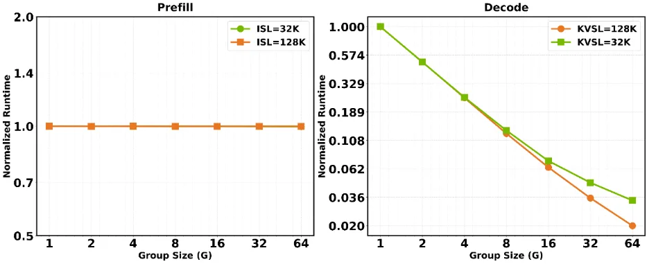
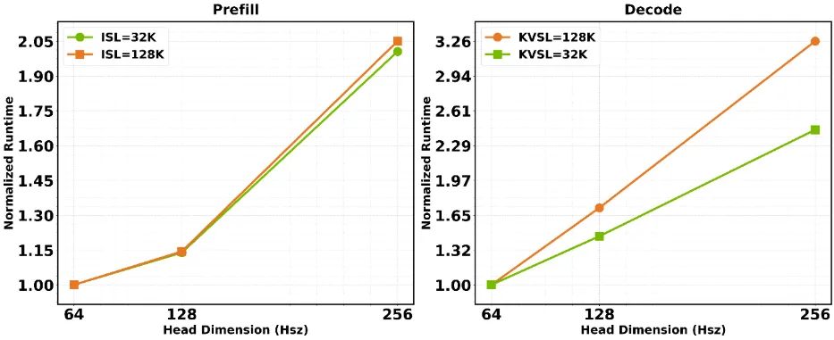
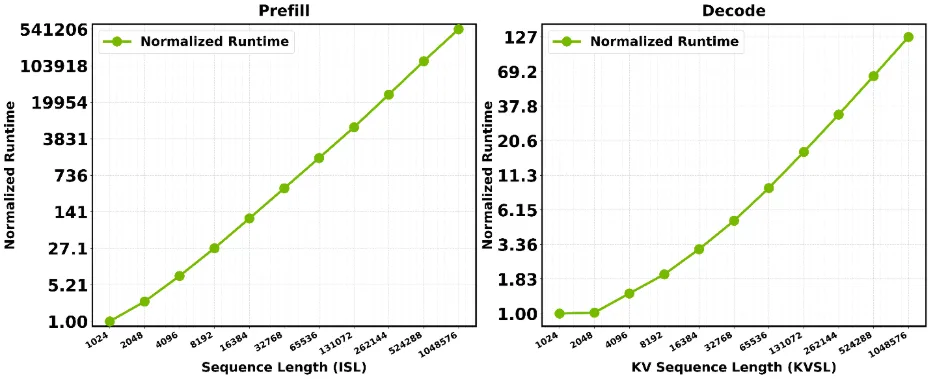
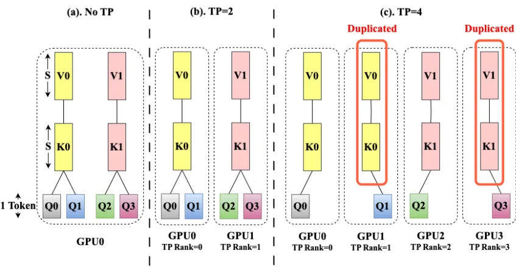

随着 Agentic（智能体原生）和长上下文工作负载日益普及，上下文长度不断增长，注意力在推理时间中的占比越来越大（图 1）。由于注意力现已主导这一成本，其设计方式——而不仅仅是实现方式——越来越决定模型的推理性能。围绕 GPU 的执行方式来塑造模型架构，是 AI 模型协同设计的前提。
Group size（每个 KV head 对应的 query head 数）、head dimension（头维度）和序列长度如何影响密集注意力（dense attention）的性能——其中每个查询沿序列长度关注所有键和值。我们将这一分析与注意力在 GPU 上的并行化方式提炼为四条实用指南：一份协同设计检查清单，可帮助模型开发者在 NVIDIA GPU 上提升推理吞吐和交互性。后续将发布覆盖稀疏注意力（sparse attention）的文章。
本文的每项分析都基于两个来源：GEMM-shape 运算的解析公式，以及 prefill 和 decode 内核的实测数据（注意力计算与 KV cache 均使用 FP8）。
Prefill 并行处理完整提示词，产生 GEMM-M 较大（= ISL × \(G\)）的矩阵乘，属于计算密集型。没有投机解码（speculative decoding）时，decode 每次仅生成一个 token，产生 GEMM-M 较小（= \(G\)）的矩阵乘，并因从高带宽内存（HBM）读取 KV cache 而变为内存密集型。

投机解码会增加 GEMM-M，并可能使 decode 转向计算密集型。由于 prefill 和 decode 的查询长度、KV 访问方式和瓶颈各不相同（表 2），因此每个参数都按阶段分别进行分析。
注意：在 Agentic 和多轮应用中常见的 prefix caching（前缀缓存）场景下，新一轮对话可能具有较短的 ISL，同时需关注较大的前缀缓存。当 ISL 较短但前缀缓存较长时，prefill 的表现类似于 decode。
如前所述，Roofline模型通过计算上限和带宽上限来界定GPU性能。算术强度决定了哪个约束起主导作用（公式1）：
算术强度 = 总 FLOPs / 总访问字节数（Byte）。
脊点标志着从内存受限到计算受限的转变。Prefill（预填充）远高于该点，属于计算受限，而decode（解码）低于该点，属于内存受限（图2）。推测解码提高了decode的算术强度，可使其向脊点移动。

FlashAttention计算注意力时无需物化完整的注意力矩阵。它将\(Q\)、\(K\)和\(V\)的数据块从HBM流式加载到片上SRAM，并将三个步骤融合为一次遍历：
首先，批量矩阵乘法（BMM1）计算查询与键的得分
其次，online softmax使用运行最大值和总和来归一化得分
第三，第二次批量矩阵乘法（BMM2）对值进行加权
BMM 在 Tensor Core 上运行，而 softmax 指数运算在特殊函数单元上运行。BMM 的形状决定了后续的算术强度分析。

Attention 性能取决于其两个矩阵乘法的形状。表 3 列出了 BMM1 和 BMM2 每个阶段（Batch、M、N、K）的维度。
对于 decode，GEMM-M = \(G\)，通常为 8-16，远低于 GPU tile-M 的 64 或 128，限制了每个 tile 的并行工作量。更大的 \(G\) 使每个 token 加载的 KV 更少，并将每次加载分摊到更多 query head 上，从而提升利用率。下一节将量化这一效果。
分组大小（\(G\)）是指共享同一个 KV head 的 query head 数量。MHA 的 \(G\) = 1，GQA 的 \(G\) = 4、8、16、……，MQA 的 \(G\) = QH。
算术强度作为 \(G\) 的函数。在以下公式中，“Bytes”指移动的 HBM 字节数。为简化起见，假设每个元素占 1 字节（即 FP8 KV cache）。
随着 \(G\) 增大，1/\(G\) 趋近于零，算术强度趋近 2 × ISL。在 ISL = 32K 时，将 \(G\) 从 8 提高到 16，算术强度提升不足 6%。换言之，prefill 主要由 ISL 决定，而非 \(G\)。图 4 证实了这一点：将 \(G\) 从 1（MHA）变化到 64（MQA），prefill 运行时间变化不足 1%。
FLOPs = 4×PB×QH×ISL²×Hsz（与 G 无关）；Bytes = 2×PB×KH×Hsz×ISL×(G+1)；算术强度 = 2×ISL/(1+1/G)→ 2×ISL（G→∞）。
解码（GEMM-M = \(G\)）
将 \(G\) 加倍，解码算术强度翻倍。将 \(G\) 从 1 提高到 8，可通过减少内存流量和提升 GPU 计算利用率获得 8 倍收益。它与 KVSL 无关：算术强度保持接近 2 × \(G\)，因此除非 \(G\) 非常大，解码仍为内存受限。像 NVIDIA Nemotron 3 这样的模型采用了带两个 KV 头的 GQA，使解码更高效。
FLOPs = 4×DB×QH×KVSL×Hsz（与 G 无关）；Bytes = 2×DB×KH×Hsz×(G+KVSL)；算术强度 ≈ 2×G（KVSL≫G 时）。
图 4 显示，\(G\) 每翻一倍，解码运行时间约下降至原先的 1/2，因为 KV 头减半后每个 token 加载的数据量也减半。当 \(G\) > 16 时，KVSL = 32K 的曲线趋于平缓。该曲线的每步 kernel 足够小，使得两类开销占主导：固定设置与后处理开销，以及为在 KV 头很少时保持并行而将 KV 拆分到各 SM 所带来的 flash-decoding 归约开销。较长的 KVSL = 128K kernel 能更好地摊销这些开销，并继续接近 2 倍的趋势。

注意：投机解码（Speculative decoding）将有效 GEMM-M 提高到 (1+\(D\)) × \(G\)，其中 \(D\) 是草稿 token 数量。一旦其大到足以填满计算 tile，解码便趋向计算受限。
准则 1：为解码效率选择较高的 \(G\)。Prefill 运行时间随 \(G\) 保持平稳，而解码算术强度 ≈ 2 × \(G\)，因此更高的 \(G\) 可提升解码速度和 GPU 利用率。投机解码（Speculative decoding）是在给定 \(G\) 下提升性能的另一杠杆。
与 group size 不同，head dimension (Hsz) 不影响算术强度。Hsz 加倍时，FLOPs（公式 2 和 5）与字节数（公式 3 和 6）同时加倍，比值保持不变。但图 5 显示运行时间随 Hsz 增加而增加，因为 attention 内核执行三类随 Hsz 以不同方式扩展的工作。
Matmul：随 Hsz 增长，但按对齐步长增长。建议模型维度取 128 的倍数，以便与 GPU tile 大小和 cache-line 宽度对齐。部分填充的 tile 与完整 tile 成本相同，因此 Hsz = 64 需要按 128 付费。Hsz ≥ 512 时接近 tensor memory (TMEM) 容量上限。因此 128 和 256 是高效选择。
内存（KV 状态）：同样随 Hsz 增长。由于 GPU 以 128 字节为单位移动数据，内存访问与 matmul 一样，在 Hsz 为 128 的倍数时效率最高。
Softmax 则不同：其开销与 Hsz 无关，因为它作用于 attention-score 矩阵（query tokens × keys），该矩阵没有 head 维度。公式 8 和 9：
两者之间的平衡决定了各阶段中 Hsz 的成本（图 5）。
Prefill 受计算约束（matmul 加 softmax）。随着 Hsz 增长，matmul 的 FLOPs 增长，而 softmax 保持不变。如果 prefill 是纯 matmul，Hsz 加倍会使运行时间加倍；但固定的 softmax 不随之扩展，因此运行时间增幅小于 Hsz。图 5 证实了这一点：prefill 随 Hsz 上升，但增速慢于 Hsz。更宽的 Hsz 摊薄了 softmax 的开销，将更多内核时间转移到 matmul，使 prefill 更少受 softmax 约束。

解码是内存受限的（流式读取 KV cache）。更大的 Hsz 会增加每个 token 的 KV 字节数（公式 6），因此运行时间应随 Hsz 缩放。图 5 证实了这一点，尽管略低于线性，因为初始化、后处理和 flash-decoding 归约开销不随 Hsz 缩放，并且对较短的 KVSL = 32K kernel 影响更大。
指南 2：使用 128 或 256 的 Hsz。Hsz 不改变算术强度，但必须与硬件对齐。通常，Hsz = 64 仍需要为 128 宽的 tile 付出代价，而 Hsz ≥ 512 则接近 TMEM 容量上限。这使得 128 和 256 成为最佳选择。
序列长度（ISL / KVSL）对 prefill 和 decode 的影响不同，因为它通过不同的变量影响每个阶段：prefill 一次性处理所有 ISL 输入 token，而每个 decode 步骤读取长度为 KVSL 的 KV cache。因此两者的扩展速率不同（图 6）。
Prefill 呈二次方扩展
Prefill 执行 ISL² 的工作（每个 token 都与所有 token 进行注意力计算），而 KV 流量仅随 ISL 线性增长（公式 2、3）。因此算术强度随 ISL 线性上升，使 prefill 远高于 ridge point，并保持计算受限。ISL 翻倍应使运行时间约增至四倍（图 6）。在 ISL 较短时，扩展倍数低于 4x，因为固定的初始化和后处理开销占主导；一旦 ISL 足够大以分摊这些开销，就会出现二次方扩展。
Decode 呈线性扩展
每一步都读取完整的 KV cache 来生成一个 token，因此字节数随 KVSL 增长，而每步的工作量仍然很小（公式 5 和 6）。算术强度保持在约 2 × \(G\)，远低于 ridge point，因此 decode 在所有长度下都保持内存受限。KVSL 翻倍应使运行时间翻倍，图 6 证实了这一点。在 KVSL 较短时，扩展倍数低于 2x，因为初始化、后处理和 flash-decoding 归约开销不随 KVSL 缩放。随着 KVSL 的增长，它们的占比会缩小。

指南 3：尽可能减少有效 KV 状态。用例决定序列长度，但成本是不对称的：prefill 随 ISL² 增长，而 decode 随 KVSL 线性增长。通过 KV 缓存压缩、稀疏或滑动窗口注意力，或混合模型架构（如 Nemotron 3）减少有效 KV 状态，其中只有部分层承载不断增长的全局 KV 状态。
张量并行（TP）将注意力头拆分到各 GPU，使每个 GPU 获得 QH/TP 个 query 头和 KH/TP 个 KV 头。它切分的是头，而不是 token。在表 3 中，只有包含 KH/TP 的 batch 维度缩小；每个 GPU 的 GEMM 形状和算术强度保持不变。
TP 有一个实际限制：KV 头必须能被 GPU 数量整除。一旦 TP > KH，一个组的 query 头会跨越多个 rank，每个 rank 都需要共享 KV 头的一份副本。这会复制 KV 状态，增加内存和带宽开销而无收益（图 7）。因此，保持 TP ≤ KH，使每个 GPU 至少拥有一个完整组：一个 KV 头及其 \(G\) 个 query 头。

KV 头数量较少的模型（例如 Nemotron 3 只有两个）会很快耗尽 TP，因为缓存无法在每 GPU 少于一个 KV 头的情况下进行切分而不产生复制。此时注意力必须以不同方式扩展：注意力数据并行（ADP）切分请求，而 KV 并行（KVP）将长序列 KV 缓存切分到多个 GPU。FFN 则通过专家并行（EP）单独扩展。
TensorRT-LLM 将这两者组合为 Wide EP（注意力的 ADP 加上 FFN 的 EP）和 Helix Parallelism（注意力的 KVP 加上 FFN 的 EP）。在两种情况下，KH 决定了高效扩展的方式。
指南 4：让 KH 决定并行策略。保持 TP ≤ KH，使每个 GPU 拥有完整的 KV 头。KV 头数量较少的模型（MQA 有 1 个，或 GQA 有 2 个）会很快耗尽 TP，更适合采用 ADP 或 KVP 处理注意力，再加上 EP 处理 MoE FFN（在 TensorRT-LLM 中实现为 Wide EP 和 Helix Parallelism）。
参考：https://developer.nvidia.com/blog/co-designing-ai-model-attention-for-fast-interactive-long-context-inference/